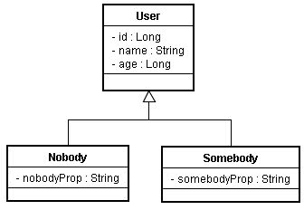
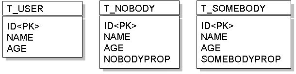

如果您採取的是物件模型的方式來設計程式，那麼繼承關係可能就會在您的程式設計中出現，然而關聯式資料庫的關聯模型與物件模型並不匹配，為了映射物件模型 與關聯模型，這邊先介紹最簡單的一種策略：Table per concrete class，也就是繼承體系中每一個類別就對應一個表格。
以實例來說明，如果您的程式中有以下的繼承關係：

最直覺的作法，就是為每個類別各設計一個表格，例如：

雖然這樣作，表格上沒有複雜的關係，除非是遺留下的系統原先表格就是這麼設計，否則不建議使用這種方式。
在以物件的觀點進行多型查詢時，例如查詢所有類型為User的資料時，必須將所有T_USER、T_NOBODY與T_SOMEBODY的資料都查出並加 以封裝，在下SQL語句時，必須使用SQL UNION、子查詢或使用多個SELECT個別查詢表格，才可以達到這個目的，在效能上不好。
另外，每個表格中有一些語義相同的欄位，例如name欄位，當領域模型物件修改時，這些相同語義的欄位就要同時跟著修改，多個表格共用相同語義，將造成維護上的困難。
而廠商很難為這個策略進行實作或實作方式不一，因此JPA並沒有要求廠商必須對此功能作出實作。
無論如何，若打算實作這個策略，在JPA下可以如下定義User類別，必須使用@Inheritance標註，並設定strategy為InheritanceType.TABLE_PER_CLASS：
- User.java
package onlyfun.caterpillar;
import java.io.Serializable;
import javax.persistence.Entity;
import javax.persistence.Id;
import javax.persistence.Inheritance;
import javax.persistence.InheritanceType;
import javax.persistence.Table;
@Entity
@Table(name="T_USER")
@Inheritance(strategy=InheritanceType.TABLE_PER_CLASS)
public class User implements Serializable {
@Id
private Long id;
private String name;
private Long age;
public Long getAge() { return age; }
public void setAge(Long age) { this.age = age; }
public Long getId() { return id; }
public void setId(Long id) { this.id = id; }
public String getName() { return name; }
public void setName(String name) { this.name = name; }
}而子類別的部份，直接標註@Entity與@Table即可，例如：
- NormalUser.java
package onlyfun.caterpillar;
import javax.persistence.Entity;
import javax.persistence.Table;
@Entity
@Table(name="T_NOBODY")
public class Nobody extends User {
private String nobodyProp;
public String getNobodyProp() {
return nobodyProp;
}
public void setNobodyProp(String nobodyProp) {
this.nobodyProp = nobodyProp;
}
}- Somebody.java
package onlyfun.caterpillar;
import javax.persistence.Entity;
import javax.persistence.Table;
@Entity
@Table(name="T_SOMEBODY")
public class Somebody extends User {
private String someBodyProp;
public String getSomeBodyProp() {
return someBodyProp;
}
public void setSomeBodyProp(String someBodyProp) {
this.someBodyProp = someBodyProp;
}
}在persistence.xml中，要增加這三個類別的<class>標籤，以載入實體類別資訊。
若您儲存的是User實例，則會儲存至T_USER表格，若您儲存的是Nobody實例，則會儲存至T_NOBODY表格，若您儲存的是Somebody實例，則會儲存至T_SOMEBODY表格。
而查詢時若使用find()方法：
user = entityManager.find(User.class, new Long(1));
則會從T_USER表格查詢。同樣地，若使用：
nobody = entityManager.find(Nobody.class, new Long(2));
則會從T_NOBODY表格查詢。
若 使用 Query 物件 搭配JPQL來查詢，可以如下進行多型查詢：
Query query = entityManager.createQuery("SELECT user FROM User user");
Iterator users = query.getResultList().iterator();
while(users.hasNext()) {
user = (User) users.next();
System.out.printf("%d\t%s\t%d\n",
user.getId(),
user.getName(),
user.getAge());
}
這會查詢T_USER、T_NOBODY與T_SOMEBODY所有的資料，實際查詢是使用SQL UNION、子查詢或使用多個SELECT個別查詢表格，則依廠商實作而有所不同。
由於廠商很難為這個策略進行實作或實作方式不一，JPA也沒有要求廠商必須對此功能作出實作，所以實際要看JPA的底層實作如何動作，在採取這個策略時必須對程式多所測試確定行為無誤。